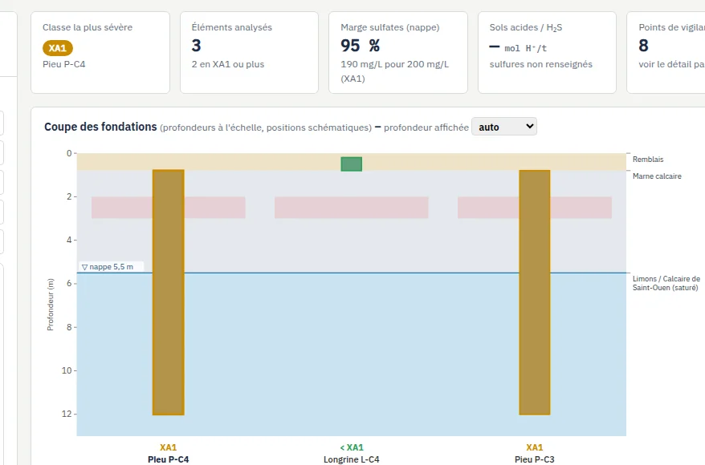
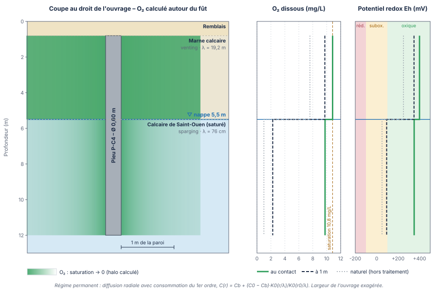
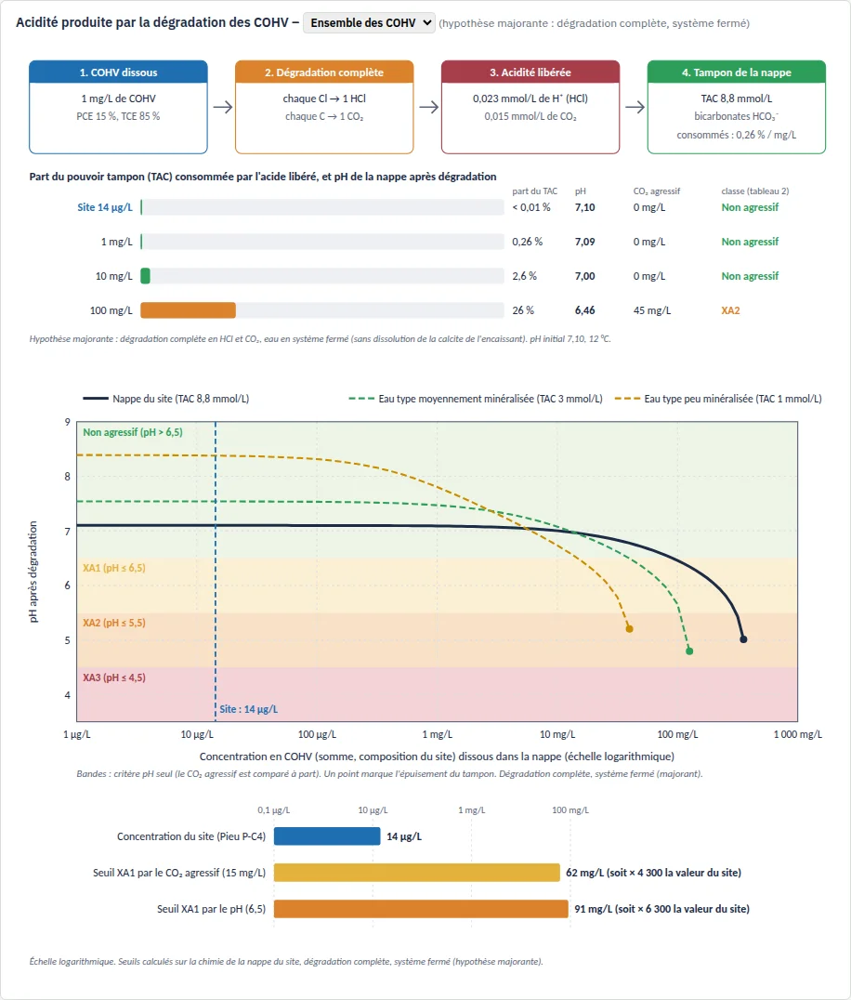

Classes d'exposition XA au sens de la NF EN 206+A2/CN (tableau 2) et du FD P18-011, au contact de chaque ouvrage. AGRESOL relie les résultats d'une étude SSP (nappe, gaz du sol, sols) aux classes de la norme et produit un rapport d'étude.
pH, CO₂ agressif, ammonium, magnésium, sulfates et chlorures comparés au tableau 2 de la NF EN 206+A2/CN. Import automatique des rapports de laboratoire (PDF, CSV, XLSX).
H₂S, CO₂ et COHV (PCE, TCE, cis-DCE, CV…) : équilibre avec l'eau interstitielle, acide chlorhydrique libéré par la dégradation des COHV et pouvoir tampon de la nappe.
Pyrite, soufre réduit, sulfates totaux, acidité Baumann-Gully et H₂S : classe « sol » au sens du FD P18-011 et vigilance sur l'oxydation des sulfures.
Venting, sparging et ISCO au persulfate : oxydation des sulfures, sulfates et acidité libérés, minéralisation de la matière organique, stripping du CO₂ et gradient d'oxydant (O₂, potentiel redox) autour des pieux, couche par couche.
Pieux, micropieux, longrines, radiers : classe d'exposition retenue à chaque profondeur, paramètre déterminant et écart aux seuils, avec coupe des fondations.
Rapport au format G.M.E.P : note de synthèse, données, modélisation, classes, repères de suivi de la nappe et annexes. Constats sur la chimie de la nappe et les classes de la norme.
AGRESOL rapproche chaque agent mesuré ou calculé des seuils de la norme et indique la classe correspondante au contact de chaque ouvrage.
Acidité (pH), CO₂ agressif, sulfates SO₄²⁻, magnésium Mg²⁺ et ammonium NH₄⁺ (tableau 2 de la NF EN 206+A2/CN). Calcium, TAC et pouvoir tampon de la nappe. Chlorures signalés au-delà de 50 mg/L.
Sulfates du sol, acidité Baumann-Gully, sulfures, pyrite et soufre réduit (FD P18-011), avec l'acide sulfurique et les sulfates que leur oxydation peut libérer.
Hydrogène sulfuré H₂S, dioxyde de carbone CO₂ et COHV chlorés (PCE, TCE, cis-DCE, chlorure de vinyle) : acide chlorhydrique HCl et CO₂ produits par leur dégradation.
Venting et sparging (oxydation de la pyrite, minéralisation, O₂ et potentiel redox) ; ISCO au persulfate de sodium (sulfates et acidité libérés selon le mode d'activation).



Classes d'exposition XA1, XA2 et XA3 des environnements chimiques agressifs : pH, CO₂ agressif, ammonium, magnésium et sulfates de l'eau ; sulfates et acidité du sol.
Définition et classification des environnements chimiquement agressifs, dont les sols acides et les sols sulfurés, et les agents non couverts par le tableau 2.
Les diagnostics, EQRS et plans de gestion décrivent la pollution et les traitements. AGRESOL reprend ces données (nappe, gaz du sol, sols, venting, sparging) et indique les classes correspondantes au contact des fondations, avec les repères de suivi de la nappe.
AGRESOL est un outil de constat. Il indique les classes d'exposition correspondant à la chimie mesurée et modélisée. Le choix de la classe, des bétons, des enrobages et des dispositions constructives relève du géotechnicien, du bureau d'études structure et de l'entreprise de génie civil.
Abonnement annuel — 1 poste
TVA française au taux normal de 20 % (art. 278 du CGI).